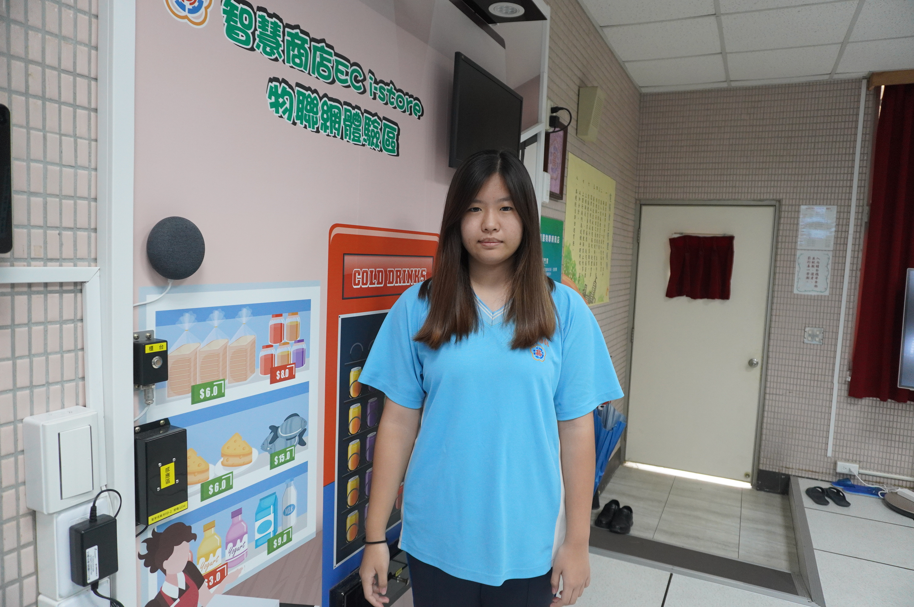
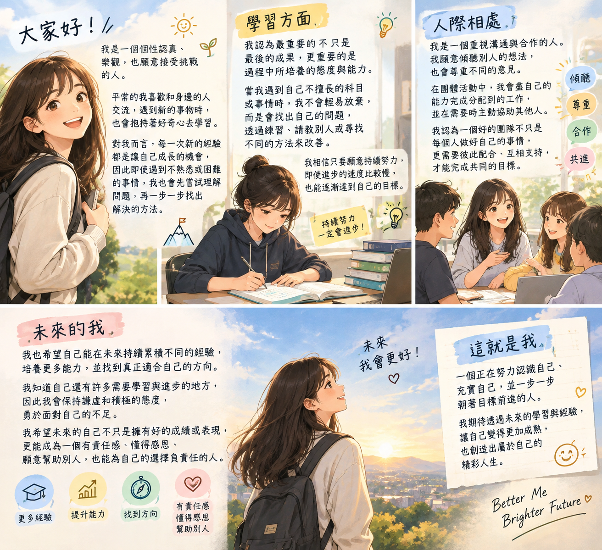

生日及星座:12/28摩羯座
畢業學校：南投國中
個人特色亮點:臉很臭
期待：不要當我
大家好，我是一個個性認真、樂觀，也願意接受挑戰的人。平常的我喜歡和身邊的人交流，遇到新的事物時，也會抱持著好奇心去學習。對我而言，每一次新的經驗都是讓自己成長的機會，因此即使遇到不熟悉或困難的事情，我也會先嘗試理解問題，再一步一步找出解決的方法。
在學習方面，我認為最重要的不只是最後的成果，更重要的是過程中所培養的態度與能力。當我遇到自己不擅長的科目或事情時，我不會輕易放棄，而是會找出自己的問題，透過練習、請教別人或尋找不同的方法來改善。我相信只要願意持續努力，即使進步的速度比較慢，也能逐漸達到自己的目標。
在人際相處上，我是一個重視溝通與合作的人。我願意傾聽別人的想法，也會尊重不同的意見。在團體活動中，我會盡自己的能力完成分配到的工作，並在需要時主動協助其他人。我認為一個好的團隊不只是每個人做好自己的事情，更需要彼此配合、互相支持，才能完成共同的目標。
我也希望自己能在未來持續累積不同的經驗，培養更多能力，並找到真正適合自己的方向。我知道自己還有許多需要學習與進步的地方，因此我會保持謙虛和積極的態度，勇於面對自己的不足。我希望未來的自己不只是擁有好的成績或表現，更能成為一個有責任感、懂得感恩、願意幫助別人，也能為自己的選擇負責任的人。
這就是我，一個正在努力認識自己、充實自己，並一步一步朝著目標前進的人。我期待透過未來的學習與經驗，讓自己變得更加成熟，也創造出屬於自己的精彩人生。
